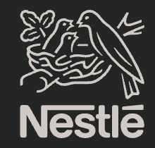
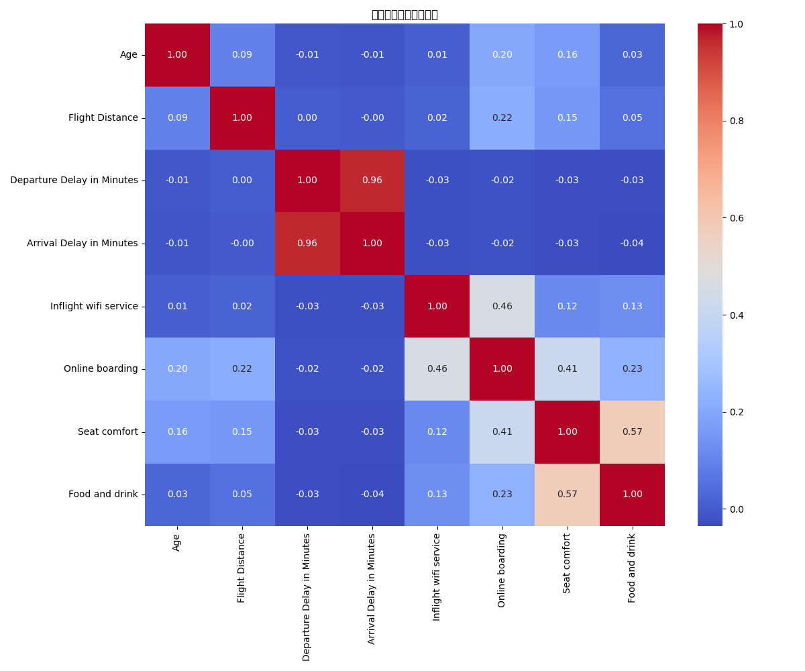

|
Suzy Tang I'm a Data Scientist with 9 years of experience spanning AI product development at Huawei and quantitative finance at HSBC. Currently, I'm pursuing a Master of Data Science at UTS while working as a Data Specialist at Cancer Council NSW. My work focuses on building machine learning systems for real-world impact—from developing NLP engines that powered Huawei's product lines to designing pricing algorithms that generated millions in revenue for FX trading operations. I'm passionate about applying advanced analytics and AI to solve complex problems in finance, healthcare, and technology. |

|
Work Experience |
|
Data Specialist
Cancer Council NSW, Sydney December 2024 - Present
• Reduced data mismatch rate by 40% through robust reconciliation workflows across departments
|
|
|
Strategy Analyst
HSBC, Hong Kong June 2021 - June 2024
• Improved FX execution accuracy by 15% through multi-variable forecasting models (spread, volatility, liquidity)
|
|
|
AI Product Manager
Huawei, China January 2018 - May 2021
• Built real-time NLP engine (>95% accuracy, <0.8s latency) using TensorFlow and Kubernetes
|
|
|  |
Data Analyst
Nestlé, China September 2016 - January 2018
• Performed end-to-end ETL on sales and logistics data for monthly executive reporting
|
Publications & Writing |
|
From FX Trading to Data Science: Lessons from Building Pricing Algorithms at HSBC
Suzy Tang Medium, November 2024 article Sharing 5 key principles learned from designing real-time pricing algorithms at HSBC that generated $2.5M in revenue: optimizing for latency, prioritizing business impact over accuracy, investing in feature engineering, implementing production fallbacks, and establishing comprehensive monitoring strategies. These lessons from quantitative finance apply across data science domains from healthcare to e-commerce. |
Featured ProjectsMy work spans quantitative finance, machine learning, and data analytics. I specialize in building production-grade ML systems, financial modeling, and creating data-driven solutions for business impact. |
Quantitative Finance & Trading |
|

|
Algorithmic Trading Strategy: Momentum-Based Backtesting Engine
Suzy Tang Quantitative Finance Project, 2024 code Prototype algorithmic trading engine identifying and backtesting momentum-based strategies on U.S. equity market data. Demonstrates systematic trading approach and quantitative finance expertise developed during HSBC experience. |
Data Science & Analytics |
|

|
Comprehensive Sales Analytics Dashboard
Suzy Tang Business Intelligence Project, 2024 live demo / code Interactive BI dashboard with 12+ visualizations analyzing $45.6M in revenue. Features monthly trends, product category breakdown, regional performance, channel effectiveness, seasonal patterns, and customer segmentation. Built with Python (Pandas, Matplotlib, Seaborn). |


|
Healthcare Analytics Dashboard
Suzy Tang Healthcare Data Analytics, 2024 code Interactive healthcare analytics system inspired by work at Cancer Council NSW. Analyzes patient volume trends, treatment costs, satisfaction metrics, and clinical outcomes across multiple departments using Python visualization stack. |
|  |
Customer Experience Analytics - Aviation Industry
Suzy Tang Machine Learning Project, 2024 code End-to-end ML pipeline for passenger satisfaction prediction. Includes comprehensive EDA, feature engineering, and classification models (Random Forest, XGBoost) achieving 85%+ accuracy. Demonstrates full data science workflow from raw data to insights. |
Data Engineering & Strategy |
|

|
Master Data Management Strategy & Snowflake Optimization
Suzy Tang Advanced Database Systems, UTS, 2024 live demo / slides / code
Part 1 (Strategy): MDM solution design for Vodafone addressing data silo challenges, with architecture diagrams and implementation roadmap.
|
Education |
|
Master of Data Science
University of Technology Sydney (UTS) 2024 - 2026 Advanced coursework in machine learning, statistical modeling, data engineering, and AI systems. |
Technical Skills |
|
Languages: Python (Pandas, NumPy, Matplotlib, Seaborn, SciPy, Scikit-learn, TensorFlow), SQL, R, PySpark, VBA
|
Miscellanea |
Awards |
HSBC APAC FinTech Innovation Award, 2023
Outstanding contributions to pricing automation, predictive modeling, and client-centric quantitative strategy design |
Interests |
Quantitative Finance • Machine Learning • Time Series Forecasting • Natural Language Processing • Data Visualization • Cloud Architecture |
|
Website template from Jon Barron. Last updated November 2024. |